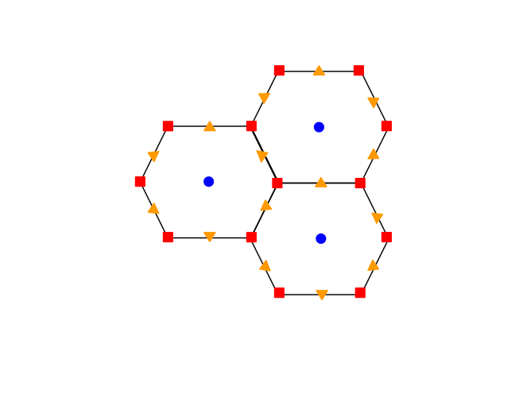
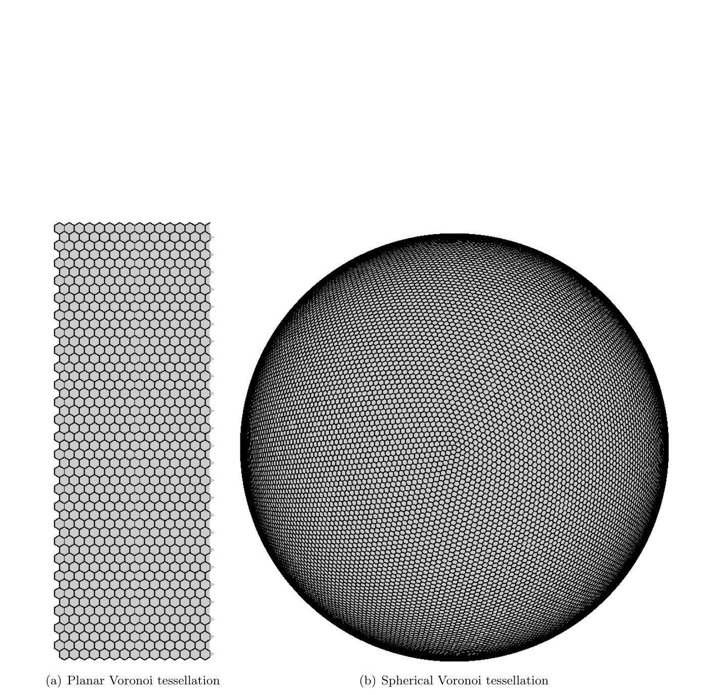
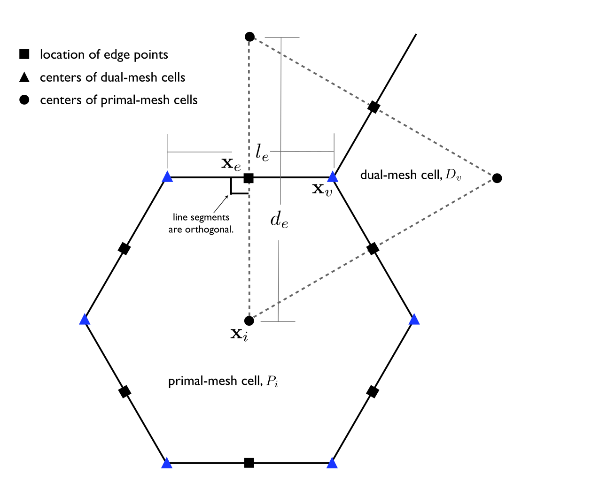
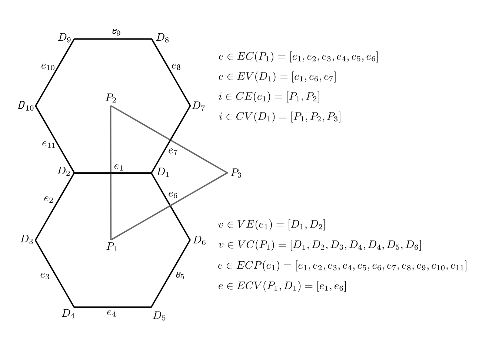
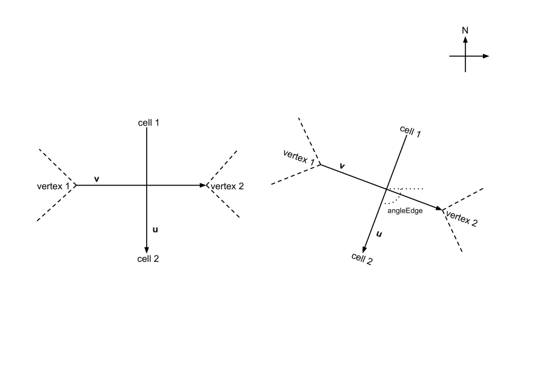
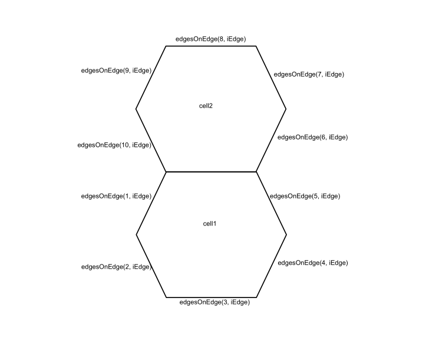
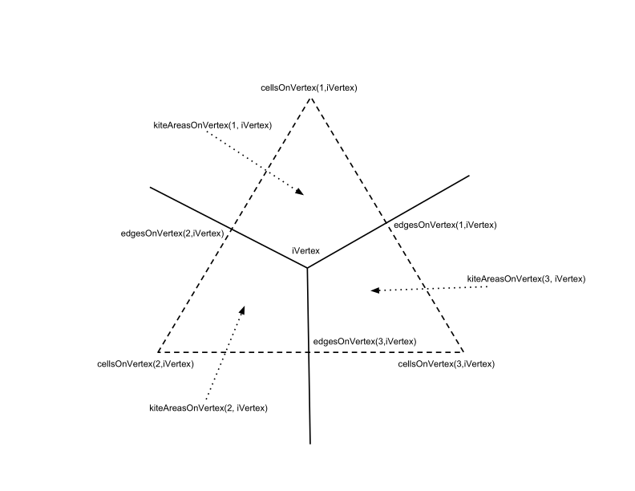
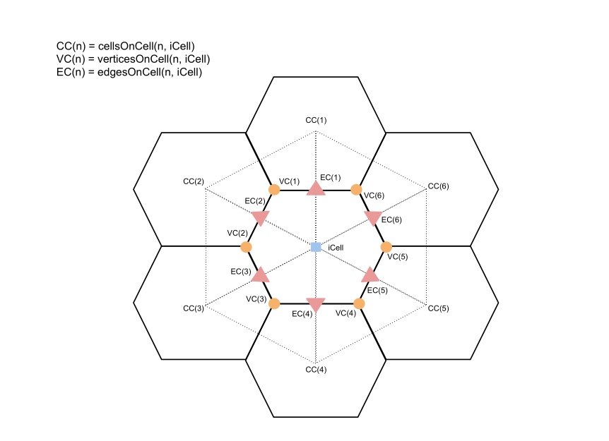

MPAS Mesh Specification
Summary
This document describes the required fields for an MPAS mesh. In addition, it defines required orderings when creating an MPAS mesh. These together fully describe the MPAS mesh type and allow users to more easily understand what makes an MPAS mesh.
The vertical coordinate and related variables and attributes are added after mesh creation and are not addressed in this document.
Definitions and conventions
The meshes used by MPAS are Voronoi tessellations (VTs), in which MPAS identifies three types of elements: cells, edges, and vertices. Cells are simply the Voronoi cells in the tessellation, edges are the boundaries between adjacent Voronoi cells, and vertices are the corners of cells. In MPAS, cells are nominally located at the Voronoi generating points, which, for centroidal Voronoi tessellations, are the mass centroids of the Voronoi cells with respect to a density function, and edges are nominally located at the midpoints of edges. Fig. 1 shows three cells with their associated edges and vertices.
{kind=link}

Fig. 1 Three cell Voronoi tessellation with cells denoted by blue circles, edges by orange triangles, and vertices by red squares.
The VT meshes used by MPAS may be defined on the Cartesian plane or on a sphere. In the case of planar meshes, areas and distances are assumed to be Euclidean, and the mesh is defined on the plane \(z = 0\). On a planar mesh, eastward is the \(x\) direction and northward is the \(y\) direction.
In the case of spherical meshes, areas and distances are computed in spherical
geometry; cells, edges, and vertices are constrained to lie on the surface of
the sphere, and the sphere is centered at the origin, \((x,y,z) = (0,0,0)\). In
all cases, the coordinate systems assumed by MPAS meshes are right-handed.
Fig. 2 illustrates VT meshes on the Cartesian plane and
on the sphere. There are no requirements for the radius of the sphere, however
an attribute sphere_radius is required that defines the radius of the sphere.
{kind=link}

Fig. 2 Examples of Voronoi tessellations.
Grid description
The MPAS grid system requires the definition of seven elements. These seven elements are composed of two types of cells, two types of lines, and three types of points. These elements are depicted in Fig. 3 and defined in Table 1. These elements can be defined on either the plane or the surface of the sphere. The two types of cells form two meshes, a primal mesh composed of Voronoi regions and a dual mesh composed of Delaunay triangles. Each corner of a primal mesh cell is uniquely associated with the “center” of a dual mesh cell and vice versa. So we define the two mesh as either a primal mesh (composed of cells \(P_i\)) or a dual mesh (composed of cells \(D_v\)). The center of any primal mesh cell, \(P_i\), is denoted by \({\bf x}_i\) and the center of any dual mesh cell, \(D_v\), is denoted by \({\bf x}_v\). The boundary of a given primal mesh cell \(P_i\) is composed of the set of lines that connect the \({\bf x}_v\) locations of associated dual mesh cells \(D_v\). Similarly, the boundary of a given dual mesh cell \(D_v\) is composed of the set of lines that connect the \({\bf x}_i\) locations of the associated primal mesh cells \(P_i\).
As shown in Fig. 3, a line segment that connects two primal mesh cell centers is uniquely associated with a line segment that connects two dual mesh cell centers. We assume that these two line segments cross and the point of intersection is labeled as \({\bf x}_e\). In addition, we assume that these two line segments are orthogonal as indicated in Fig. 3. Each \({\bf x}_e\) is associated with two distances: \(d_e\) measures the distance between the primal mesh cells sharing \({\bf x}_e\) and \(l_e\) measures the distance between the dual mesh cells sharing \({\bf x}_e\).
Since the two line segments crossing at \({\bf x}_e\) are orthogonal, these line segments form a convenient local coordinate system for each edge. At each \({\bf x}_e\) location a unit vector \({\bf n}_e\) is defined to be parallel to the line connecting primal mesh cells. A second unit vector \({\bf t}_e\) is defined such that \({\bf t}_e = {\bf k} \times {\bf n}_e\).
In addition to these seven element types, we require the definition of sets of elements. In all, eight different types of sets are required and these are defined and explained in Table 2 and Fig. 4. The notation is always of the form of, for example, \(i \in CE(e)\), where the LHS indicates the type of element to be gathered (cells) based on the RHS relation to another type of element (edges).
Table 3 provides the names of all elements and all sets of elements as used in the MPAS framework. Elements appear twice in the table when described in the grid file in more than one way, e.g. points are described with both Cartesian and latitude/longitude coordinates.
An ncdump -h of an MPAS mesh, output, or restart file should contain the
mesh-variable names listed in Table 3.
{kind=link}

Fig. 3 Definition of elements used to build the MPAS grid. Also see Table 1.
Element |
Type |
Definition |
|---|---|---|
\({\bf x}_i\) |
point |
location of center of primal-mesh cells |
\({\bf x}_v\) |
point |
location of center of dual-mesh cells |
\({\bf x}_e\) |
point |
location of edge points where velocity is defined |
\(d_e\) |
line segment |
distance between neighboring \({\bf x}_i\) locations |
\(l_e\) |
line segment |
distance between neighboring \({\bf x}_v\) locations |
\(P_i\) |
cell |
a cell on the primal-mesh |
\(D_v\) |
cell |
a cell on the dual-mesh |
{kind=link}

Fig. 4 Definition of element groups used to reference connections in the MPAS grid. Also see Table 2.
Syntax |
Output |
|---|---|
\(e \in EC(i)\) |
set of edges that define the boundary of \(P_i\). |
\(e \in EV(v)\) |
set of edges that define the boundary of \(D_v\). |
\(i \in CE(e)\) |
two primal-mesh cells that share edge \(e\). |
\(i \in CV(v)\) |
set of primal-mesh cells that form the vertices of dual mesh cell \(D_v\). |
\(v \in VE(e)\) |
the two dual-mesh cells that share edge \(e\). |
\(v \in VI(i)\) |
the set of dual-mesh cells that form the vertices of primal-mesh cell \(P_i\). |
\(e \in ECP(e)\) |
edges of cell pair meeting at edge \(e\). |
\(e \in EVC(v,i)\) |
edge pair associated with vertex \(v\) and mesh cell \(i\). |
Element |
Name |
Size |
Comment |
|---|---|---|---|
\({\bf x}_i\) |
{x,y,z}Cell |
nCells |
Cartesian location of \({\bf x}_i\) |
\({\bf x}_i\) |
{lon,lat}Cell |
nCells |
longitude and latitude of \({\bf x}_i\) |
\({\bf x}_v\) |
{x,y,z}Vertex |
nVertices |
Cartesian location of \({\bf x}_v\) |
\({\bf x}_v\) |
{lon,lat}Vertex |
nVertices |
longitude and latitude of \({\bf x}_v\) |
\({\bf x}_e\) |
{x,y,z}Edge |
nEdges |
Cartesian location of \({\bf x}_e\) |
\({\bf x}_e\) |
{lon,lat}Edge |
nEdges |
longitude and latitude of \({\bf x}_e\) |
\(d_e\) |
dcEdge |
nEdges |
distance between \({\bf x}_i\) locations |
\(l_e\) |
dvEdge |
nEdges |
distance between \({\bf x}_v\) locations |
\(e \in EC(i)\) |
edgesOnCell |
(maxEdges, nCells) |
edges that define \(P_i\) |
\(e \in EV(v)\) |
edgesOnVertex |
(vertexDegree, nVertices) |
edges that define \(D_v\) |
\(i \in CE(e)\) |
cellsOnEdge |
(2, nEdges) |
primal-mesh cells that share edge \(e\) |
\(i \in CV(v)\) |
cellsOnVertex |
(vertexDegree, nVertices) |
primal-mesh cells that define \(D_v\) |
\(v \in VE(e)\) |
verticesOnEdge |
(2, nEdges) |
dual-mesh cells that share edge \(e\) |
\(v \in VI(i)\) |
verticesOnCell |
(maxEdges, nCells) |
vertices that define \(P_i\) |
Grid dimensions
Dimension |
Description |
|---|---|
Time |
netCDF record (unlimited) dimension |
nCells |
Number of cells in the grid |
nEdges |
Number of edges (cell faces) in the grid |
nVertices |
Number of vertices (cell corners) in the grid |
maxEdges |
Maximum number of edges on any cell, equal to max neigbor cells |
maxEdges2 |
Twice maxEdges |
vertexDegree |
Number of edges incident with each vertex (3 for Delaunay dual grid) |
TWO |
Constant value 2 |
THREE |
Constant value 3 |
FIFTEEN |
Constant value 15 |
TWENTYONE |
Constant value 21 |
R3 |
Constant value 3 |
StrLen |
Length of strings |
Horizontal mesh fields
The Read by column indicates how Omega obtains each field:
HorzMeshIn— read from the mesh file by theHorzMeshInI/O stream and field group, which are defined by theHorzMeshclass.Decomp— read and redistributed by theDecompclass beforeHorzMeshis constructed. These arrays hold local addresses that depend on the domain decomposition, so they are neither read nor written byHorzMesh.—— not read by Omega.
Field |
Read by |
Description |
|---|---|---|
|
|
Cell center latitude (rad) |
|
|
Cell center longitude (rad) |
|
|
Cell center x-coordinate (m; scaled by |
|
|
Cell center y-coordinate (m; scaled by |
|
|
Cell center z-coordinate (m; scaled by |
|
|
Global cell ID |
|
|
Edge latitude (rad) |
|
|
Edge longitude (rad) |
|
|
Edge x-coordinate (m; scaled by |
|
|
Edge y-coordinate (m; scaled by |
|
|
Edge z-coordinate (m; scaled by |
|
|
Global edge ID |
|
|
Vertex latitude (rad) |
|
|
Vertex longitude (rad) |
|
|
Vertex x-coordinate (m; scaled by |
|
|
Vertex y-coordinate (m; scaled by |
|
|
Vertex z-coordinate (m; scaled by |
|
|
Global vertex ID |
|
|
IDs of the two cells separated by each edge |
|
|
Number of edges forming the border of each cell |
|
|
Number of edges used in computing tangential velocity for each edge |
|
|
IDs of edges forming boundary of each cell |
|
|
IDs of edges used in computing tangential velocity for each edge |
|
|
Weights used in computing tangential velocity for each edge; could be computed internally |
|
|
Distance (in spherical geometry) between end points of each edge; could be computed internally |
|
|
Distance (in spherical geometry) between cell centers separated by each edge; could be computed internally |
|
|
Angle between positive normal direction and local east vector for each edge, as illustrated in Fig. 5; could be computed internally |
|
|
Area (in spherical geometry) of each cell, or -1 for an incomplete cell; could be computed internally |
|
|
Area (in spherical geometry) of each dual-grid cell (Delaunay triangle); could be computed internally |
|
|
IDs of neighbor cells for each cell |
|
|
IDs of corner points (vertices) for each cell |
|
|
IDs of vertices forming endpoints for each edge |
|
|
IDs of edges incident with each vertex |
|
|
IDs of cells that meet at each vertex |
|
|
Areas (in spherical geometry) of intersections between primal- and dual-grid cells; could be computed internally |
|
|
SCVT density function evaluated at cell centers; read from the mesh generator input rather than computed |
Coordinate-value conventions
The latitude and longitude fields use radians and follow these value conventions:
Fields |
Valid values or convention |
|---|---|
|
\(-\pi/2 \leq \mathrm{latitude} \leq \pi/2\) |
|
\(0 \leq \mathrm{longitude} \leq 2\pi\) |
All latitude and longitude fields on a planar mesh |
Constant value of 0 |
Edge angles
angleEdge may be defined equivalently as the angle that the positive normal
direction \(\vec{u}\) makes with the local eastward direction (shown in
Definition of angleEdge, the angle between the positive normal direction
\vec{u} and the local eastward direction. Equivalently, it is the angle), or as the angle that the positive tangential direction
\(\vec{v}\) makes with the local northward direction.
{kind=link}

Fig. 5 Definition of angleEdge, the angle between the positive normal direction
\(\vec{u}\) and the local eastward direction. Equivalently, it is the angle
Reference formulations
Two equivalent formulations are used in practice. Both satisfy the definition above, but the former was found to be more accurate on spherical meshes.
Normal-and-east formulation
Let \(\hat{\mathbf{e}}\) and \(\hat{\mathbf{n}}\) be the local eastward and northward unit vectors at \({\bf x}_e\),
where \(\hat{\mathbf{k}}\) is the Cartesian \(z\) axis. The edge-normal direction is recovered from the tangential vector as \(\vec{u} \propto \vec{v} \times {\bf x}_e\), and its eastward and northward components are
The angle then follows directly from a two-argument arctangent,
which returns a value in \((-\pi, \pi]\). This formulation is used by the Polaris spherical base-mesh step.
Tangential-and-north formulation
Equivalently, the angle may be obtained from the change in latitude along the edge. On the unit sphere,
where \(l_e\) is dvEdge expressed on the unit sphere, that is, dvEdge divided
by sphere_radius. Because \(\arccos\) is even, this yields only the magnitude of
the angle; the sign is taken from the orientation of
\(\mathbf{x}_{v_2}\) relative to a reference point displaced slightly northward
from \({\bf x}_e\), and the result is then wrapped into \([-\pi, \pi]\),
This formulation is used by MpasMeshConverter.x.
On a planar mesh, both formulations reduce to the angle between the edge-normal vector and the \(x\) axis,
with \(\vec{u}\) evaluated after any periodic adjustment of \(\mathbf{x}_{\mathrm{cellsOnEdge}(2,\mathrm{iEdge})}\) relative to \(\mathbf{x}_{\mathrm{cellsOnEdge}(1,\mathrm{iEdge})}\).
Recovering earth-relative vectors
Given a vector \((u_\perp, u_\parallel)\) defined in terms of components orthogonal to and parallel to the edge, the earth-relative components \((u,v)\) in the local eastward and northward directions are
where \(\alpha = {\rm angleEdge}\). This relation holds for either reference formulation, since it depends on \(\alpha\) only through \(\cos\alpha\) and \(\sin\alpha\).
Global attributes
The following global attributes are required by the MPAS framework. All MPAS meshes should contain these global attributes.
Attribute |
Type |
Valid values |
Description |
|---|---|---|---|
|
character |
|
Defines whether the mesh describes points that lie on the surface of a sphere. |
|
double |
any non-negative real value |
Radius of the sphere the points are defined on. Set to 0 for a planar mesh. |
|
character |
|
Defines whether the mesh has any periodic boundaries. Only meaningful when |
|
character |
any valid version of the MPAS mesh specification |
Version of the MPAS mesh specification the mesh conforms to. |
|
character |
any combination of lowercase letters and numbers |
Random string used for tracking mesh provenance. |
|
character |
one or more |
Provenance chain of the files this mesh was derived from. |
|
character |
|
Identifies the file as following MPAS conventions. |
|
character |
name of the generating tool |
Tool that produced the mesh, e.g. |
|
character |
free text |
Command line used to produce the mesh, prepended to any inherited history. |
When is_periodic is set to "YES", the following two attributes are required
as well:
Attribute |
Type |
Valid values |
Description |
|---|---|---|---|
|
double |
any positive real value |
Period of the mesh in the \(x\) direction. |
|
double |
any positive real value |
Period of the mesh in the \(y\) direction. |
Connectivity and ordering requirements
Connectivity arrays that describe corresponding elements must use consistent
ordering. For example, edgesOnCell(n, iCell) must identify the edge between
iCell and cellsOnCell(n, iCell).
When creating an MPAS mesh, it is recommended to establish connectivity and ordering relative to edges first, then vertices, and finally cells.
Missing values and padding
A mesh may contain a cell with no neighbor across one or more edges, such as an
ocean mesh from which land cells have been removed. In this case, the missing
entry in a connectivity array such as cellsOnCell must be represented by 0.
Connectivity arrays also need padding when an element has fewer entries than
the corresponding maximum dimension. For example, if a mesh contains a
heptagon, maxEdges is 7, while hexagons and pentagons have only 6 and 5 valid
entries. MPAS itself does not prescribe the padding values, and reference mesh
generation tools pad with zeros. Some external tools instead require repetition
of the final valid entry. Use a convention that is consistent across the
complete tool chain.
Requirements relative to edges
The edge-normal and tangential vectors and the angleEdge convention are
defined in Edge angles. In addition, the edge connectivity arrays must
satisfy the following ordering requirements:
edgesOnEdgemust proceed counter-clockwise, beginning with the edges that surroundcellsOnEdge(1, iEdge)and ending with the edges that surroundcellsOnEdge(2, iEdge).The current edge is omitted from
edgesOnEdge, but it may be treated as both the starting and ending location when checking counter-clockwise ordering.weightsOnEdgemust use exactly the same ordering asedgesOnEdge; thus,weightsOnEdge(n, iEdge)applies toedgesOnEdge(n, iEdge). The weights are those of the TRiSK formulation of Thuburn et al., J. Comput. Phys., 2009, and depend ondcEdge,dvEdge,areaCell, andkiteAreasOnVertex.
{kind=link}

Fig. 6 Counter-clockwise ordering of edgesOnEdge around the two cells that share an
edge.
Requirements relative to vertices
cellsOnVertexandedgesOnVertexmust proceed counter-clockwise around a vertex.Cells and edges alternate around a vertex, with
cellsOnVertex(n, iVertex)lying counter-clockwise ofedgesOnVertex(n, iVertex)and clockwise ofedgesOnVertex(n+1, iVertex). For every valid \(n\), the vector\[ \left(\mathbf{x}_{\mathrm{edgesOnVertex}(n,\mathrm{iVertex})} - \mathbf{x}_{\mathrm{iVertex}}\right) \times \left(\mathbf{x}_{\mathrm{cellsOnVertex}(n,\mathrm{iVertex})} - \mathbf{x}_{\mathrm{iVertex}}\right) \]must point in the local outward-normal direction. The indices in this expression represent their corresponding Cartesian position vectors.
This has the same sense as the corresponding requirement relative to cells below, where
verticesOnCell(n, iCell)likewise lies counter-clockwise ofedgesOnCell(n, iCell).kiteAreasOnVertex(n, iVertex)is the intersection ofareaTriangle(iVertex)withareaCell(cellsOnVertex(n, iVertex)). It follows from the ordering above that this kite is the quadrilateral bounded byiVertex,edgesOnVertex(n, iVertex),cellsOnVertex(n, iVertex), andedgesOnVertex(n+1, iVertex), where the edge index wraps back to 1 for the last kite.
{kind=link}

Fig. 7 Ordering of cells, edges, and kite areas relative to a vertex.
Requirements relative to cells
cellsOnCell,edgesOnCell, andverticesOnCellmust each proceed counter-clockwise around a cell.edgesOnCell(n, iCell)must be the edge betweeniCellandcellsOnCell(n, iCell).verticesOnCell(n, iCell)must lead bothedgesOnCell(n, iCell)andcellsOnCell(n, iCell). For every valid \(n\), the vector\[ \left(\mathbf{x}_{\mathrm{edgesOnCell}(n,\mathrm{iCell})} - \mathbf{x}_{\mathrm{iCell}}\right) \times \left(\mathbf{x}_{\mathrm{verticesOnCell}(n,\mathrm{iCell})} - \mathbf{x}_{\mathrm{iCell}}\right) \]must point in the local outward-normal direction. The same requirement holds when
cellsOnCellis substituted foredgesOnCell. The indices in these expressions represent their corresponding Cartesian position vectors.
{kind=link}

Fig. 8 Consistent counter-clockwise ordering of cells, edges, and vertices relative to a cell.
Boundary representation
Some meshes need to represent boundaries between active and inactive regions,
between ocean and land, or between a nested mesh and its parent mesh. A
boundary edge is represented through cellsOnEdge: when the second entry,
cellsOnEdge(2, iEdge), is 0, the edge is treated as a boundary edge.
Optional and diagnostic fields
The following fields are not required by this specification. Some are written by mesh-generation tools as diagnostics, and others are commonly computed internally by MPAS cores.
Field |
Read by |
Description |
|---|---|---|
|
— |
1 if the vertex has fewer than |
|
— |
Ratio of the minimum to maximum |
|
— |
Mean |
|
— |
Ratio of the minimum to maximum |
|
— |
Ratio of the minimum to maximum interior angle of each dual triangle |
|
— |
1 if the dual triangle contains an obtuse angle, 0 otherwise |
|
— |
Vectors in Cartesian space normal to each edge |
|
— |
Vectors in Cartesian space pointing in the local vertical direction at cell centers |
|
— |
Two orthonormal vectors in the tangent plane of each cell |
|
|
Coriolis parameter at cell centers (radians s^-1) |
|
|
Coriolis parameter at edges (radians s^-1) |
|
|
Coriolis parameter at vertices (radians s^-1) |